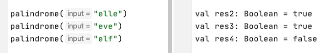

What you will do
In this codelab, you're going to write recursive functions in Scala to solve iteration problems without loops..
What you will learn
- What is recursion
- How to write a recursive function
- What is a tail recursive function and how to write one
Recursive function example
In the video, the recursive function for sum was defined with:
- Base case
sumRec(0) = 0 - Recursive case
sumRec(n) = n + sumRec(n-1)
Try this out in a Scala Worksheet.
Task 1 Factorial
Write a recursive function for product where:
- Base case
product(1) = 1 - Recursive case
product(n) = n * product(n-1)
Look at the pattern.
Input: x = 18Output: 18, 13, 8, 3, -2, 12, 7, 2, -3, 11, 6, 1, -4, 10, 5, 0
Instructions:
- Reduce by 5 until negative or 0.
- When negative, add 14.
- When 0, stop.
Task 2 Pattern by loop
Write a function that uses a loop to print the output.

Your answer should output:
Task 3 Pattern by recursion
Write a recursive function (no loop!) to print the output.
Calculate the savings in a bank account after n months:
- Deposit 1,000 baht each month
- Earn 2.5% interest each month
After 36 months, you would have invested 36,000 baht and your balance would be 57,301 baht.
Task 4 Savings by loop
Write a function named savings that takes the number of months n and the starting balance, and returns the balance at the end of n months.
Test your function by comparing the values to the table above.
Example
Task 5 Savings by recursion
Write the same function using recursion.
Task 6 More parameters
Modify the solution to Task 5 such that the deposit amount (1,000 baht) and the interest rate (2.5%) are parameters to the recursive function.
Task 7
Write a recursive function to reverse a string.
Task 8
A palindrome is a word or phrase that has the same character order forwards and backwards. Palindromes:
- madam
- anna
- civic
- racecar
- noon
Write a recursive function to check if a string is a palindrome.

Task 9
A subsequence is a string that is part of another string. Example: "el" is part of "hello".
Write a recursive function to check if a string is a subsequence of a string.
subsequence("el", "hello")should returntruesubsequence("heo", "hello")should returnfalse
There are a finite number of passwords. A brute force attack involves checking all of them.
Task 10 Generate passwords
Given a set of characters generate all possible passwords. This means we should generate all possible permutations of words using the given characters.
Write a function that takes an array of characters and returns an array of strings that is every possible password that can be generated.
Examples
perms(['a', 'b'])should return["a", "b", "aa", "ab", "ba", "bb"]perms(['x', 'y', 'z'])should return["x", "y", "z", "xx", "xy", "xz", "yx", "yy", "yz", "zx", "zy", "zz", "xxx", "xxy", "xxz", "xyx", "xyy", "xyz", "xzx", "xzy", "xzz", ...]
Only do this if you want to push yourself!
A shrinkable word is a word that can be reduced down to the empty string by deleting one letter at a time such that, at each stage, the remaining string is a word. For example, the word "startling" is shirnkable because of this sequence of words:
- startling → starting → staring → string → sting → sing → sin → in → i → (empty)
More information: https://web.stanford.edu/class/archive/cs/cs106b/cs106b.1174/lectures/10/Small10.pdf
Write a function that accepts as input a string and a set of all the words in English, then reports whether the input word is shrinkable.
Recursion requires you to think differently about programming problems:
- What is the base case? (Typically an empty string or 0 or 1)
- How to go from n-th case to n+1-th case? Use a divide-and-conquer approach.
Always try to write your recursive function as a tail recursive function for better performance.
Further reading:
- Alvin Alexander on Tail-Recursive Algorithms in Scala
- Scala Tutorial Tail Recursion
- Free code camp Recursion is not hard: a step-by-step walkthrough